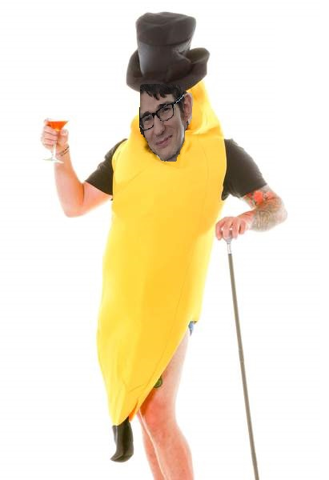

The banana plant is the largest herbaceous flowering plant. All the above-ground parts of a banana plant grow from a structure usually called a "corm". Plants are normally tall and fairly sturdy, and are often mistaken for trees, but what appears to be a trunk is actually a "false stem" or pseudostem.
banana site loop >' 